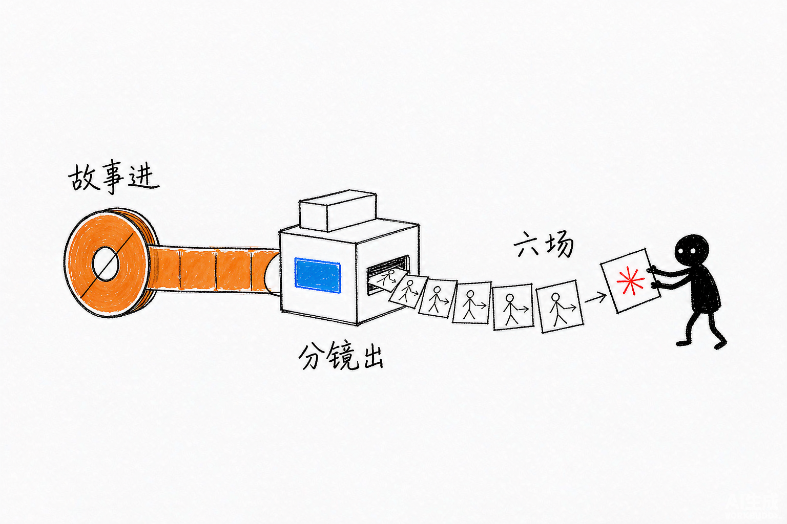

基于 Claude Agent SDK 的 Web 应用：对话生成 Seedance 2.0 视频脚本和分镜提示词，从故事分析到分镜全流程覆盖。
有了视频模型，缺的是把创意变成可执行脚本的那一步
Seedance 2.0 能生成视频，但从一个模糊的故事想法到一份可执行的分镜脚本，中间隔着结构分析、节奏设计、提示词工程。这个应用把整条链路搬进对话框：描述你的故事，它从分析到分镜一步步帮你落成脚本。
Seedance 脚本分镜对话应用 的六大能力
自然语言描述故事，自动生成专业视频脚本
脚本自动拆解为分镜，并生成对应提示词
先分析故事结构与节奏，再落分镜，不跳步
从故事分析到分镜脚本，一个应用内完成
浏览器直接使用，无需命令行基础
基于 Claude Agent SDK，能力可持续扩展
小黑手绘风格插图

从输入到产出，一步到位
快速开始
git clone https://github.com/liangdabiao/claudesdk-seedance-chat.git
npm install
配置 Claude API Key
npm run dev # 浏览器打开后描述你的故事
现代化技术组合
关于 Seedance 脚本分镜对话应用 的常见疑问